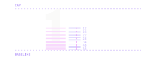

Nothing kept.
Nothing known.
Nothing to take.
Obliv1a builds open-source software for people who want out of Big Tech and have no interest in becoming technical to get there. We host it. We keep nothing: no logs, no training on your conversations, no account trail.
The first product is Obliv1a Chat
Made to forget you
oh-BLIV-ee-uh
Oblivion and Olivia, folded together. The forgetting and the person it is done for. Both readings are live and the brand uses both: oblivion is what the software does, Olivia is who it does it for.
The 1 is not a stylisation and not a logo-only flourish. It is how the name is spelled: in the wordmark, in running text, in the domain, in a legal footer, in a sentence someone types into a search bar. It reads as an i and is never spoken. It is also the single load-bearing glyph of the identity: the mark is that numeral and nothing else (§03).
| Form | Status | Where |
|---|---|---|
| Obliv1a | Correct | Everywhere. Prose, UI, legal, URLs, speech-to-text. |
| OBLIV1A | Correct | Display type and the wordmark only, where the whole line is uppercase. |
| Obliv1a Chat | Correct | Products take a plain descriptive suffix. Never a sub-brand. |
| Oblivia | Wrong | The etymology, not the name. Never printed. |
| Obliv1A / OBLiV1a | Wrong | Only the first letter capitalises. |
| 0bliv1a | Wrong | One numeral, not two. The joke does not compound. |
Say
“Obliv1a keeps nothing.” “Ask Obliv1a Chat.” “Built by Obliv1a.”
Don't say
“Obliv1a (pronounced Oblivia)” “The Obliv1a platform” “Obliv1a AI”
The privacy category has one picture: a shield, a lock, a keyhole, a padlock rendered in gradient. All of it is armour around something that is still being kept. Kept data is data that can be subpoenaed, breached, sold, or quietly repurposed the year after you agreed to something else.
Obliv1a hosts the software so an ordinary person never has to run a server, and retains nothing: no conversation logs, no training on what you type, no account trail behind you. The source is open, so this is a claim you can check rather than a promise you have to accept. That is the entire product and the entire identity. The system is designed around absence.
What the identity is built to carry
Amnesia is the feature
Absence is never apologised for, hedged, or drawn as a missing thing. It is the offer.
No expertise required
If a screen needs you to know what a threat model is, that screen has failed.
Auditable over reassuring
Show the check. Never repeat the promise louder.
One brand, many tools
Nothing in the system may be built around chat. Chat is the first product, not the shape.
Serious, not paranoid
The audience is anxious already. Carry conviction; never recruit them into fear.
The erasure
It keeps the full cap height and silhouette of a 1, because it has to read as the character in the name before it reads as anything else, and gives up what is inside instead. Seven horizontal slots cut through the stem, thickening as they descend while the bands between them thin, so the glyph is solid at the top and almost gone at the baseline.
The argument is in the drawing. The shape survives; the contents do not. That is the product: you keep your name on the thing, we keep none of what went through it. Every other material in this system is a restatement of this one drawing (§07).

| Property | Value | Note |
|---|---|---|
| Base glyph | Archivo · wdth 62 · wght 800 | SIL OFL 1.1. The 1 is the family's own glyph, unmodified in outline. |
| Slot count | 7 | Fixed. Never add, remove or re-space them. |
| Slot heights | 12 · 16 · 22 · 28 · 34 · 40 · 38 | Font units at 1000 upem, top to bottom. |
| Band heights | 44 · 38 · 32 · 26 · 20 · 14 · 8 | The surviving material, thinning downward. |
| Solid above | 0.46 cap | The flag and upper stem never break. |
Mark · on paper
Mark · on void
Mark · on field
Plaque · merch, avatars
Tile · app icon
Small · 32px and 16px
Hold x, one stem width, clear on all four sides, measured
from the glyph's ink, not its artboard. Nothing enters that margin: no rule, no
type, no photograph edge.
The erased mark holds down to a 24 px cap height. Below that
the slots silt up and it reads as a smudge, so ship
obliv1a-favicon.svg instead: the same numeral, solid.
This is the one place the system is allowed to drop its signature material, and
it drops it completely rather than halfway.
| Rotate or mirror | The slots read as gravity. Sideways they read as damage. |
| Re-space the slots | The progression is the drawing. Even spacing is a different mark. |
| Outline or stroke | The mark is a solid. An outlined 1 is a wireframe of nothing. |
| Recolour off-palette | FIELD, VOID, PAPER, or the ground's own text colour. Nothing else. |
| Add depth | No shadow, bevel, glow or gradient. The system has no shadows at all. |
| Stretch | Scale proportionally. The stem-to-slot ratio is fixed. |
| Set inside a circle | The container is a square, or there is no container. |
Archivo at width 62 and weight 800, tracked −14/1000 em, uppercase. Six of the seven characters are the typeface doing its job honestly. The seventh is the mark. Nothing else is customised, and nothing else needs to be.
| Aspect | 4.270 : 1 |
| Cap height | 48 units |
| Tracking | −14 / 1000 em |
| Minimum width | 104 px |
Horizontal lockup
Default. Headers, footers, letterheads, anywhere with a horizon.
Stacked lockup
Square and narrow spaces. Merch, stickers, app splash, social avatars.
Small-size wordmark
Below a 24 px cap. The 1 goes solid; everything else is identical.
Every value is a stock Tailwind colour. The scale step is the source of truth; the role name is how product code refers to it.
The strategy is committed: one saturated colour carries whole regions, not accents dropped on a neutral page. A surface is either FIELD, VOID or PAPER end to end. Half-tinted backgrounds and 5%-opacity brand washes are not part of the system.
Violet rather than blue because the brand is not the message, it is what happens after. Dusk rather than daylight. Fuchsia is the only warm note and it is rationed hard: it is a dark-ground colour, and it never sets type on FIELD (2.89:1, and no amount of taste fixes that).
| Role | Tailwind | On | Ratio |
|---|---|---|---|
| --ink | stone-900 | paper | 16.74 |
| --ink-mute | stone-600 | paper | 7.30 |
| --ink-field | violet-700 | paper | 6.80 |
| --on-field | stone-50 | field | 6.80 |
| --on-field-2 | violet-200 | field | 5.12 |
| --on-void | stone-50 | void | 14.59 |
| --on-void-2 | violet-300 | void | 8.25 |
| --signal | fuchsia-400 | void | 6.19 |
| --signal-ink | fuchsia-600 | paper | 4.51 |
| --danger | rose-700 | paper | 6.02 |
| --caution | yellow-700 | paper | 4.71 |
| --live | green-700 | paper | 4.80 |
These numbers are not decoration. node brand/verify-contrast.mjs
re-derives every one of them from the stylesheet and exits non-zero if a palette
edit breaks the contract.
The audience skews older and low-vision, and often reads on a cheap phone in bad light. Colour never carries meaning alone: every state pairs its colour with a word, an icon, or a change of weight (§10).
A FIELD or VOID region should own 30–60% of a full page. Below that the brand reads as trim; above it, long-form reading suffers. This document runs at roughly 40%.
Display · Archivo · wght 800 · wdth 62–88
Headlines, wordmark, posters
Made to forget you
Archivo's width axis does the work a second family usually does: 62 for the wordmark and poster voice, 75 for page headings, 88 for section headings. One licence, one file, three registers.
Plate · Bodoni Moda · wght 600 · opsz 16
Statements, pull quotes, covers
Everything you say here
is already gone.
A Didone earns its place here for a structural reason rather than an atmospheric one: its hairlines are an artefact of copperplate engraving, the same reproduction lineage the imagery comes from (§08). The optical-size axis is pinned to 16 so those hairlines survive a saturated ground; left at its default they disappear.
Text · Archivo · wght 400–700 · wdth 100
Body, UI, everything read
Obliv1a Chat runs on servers we operate and keeps no record of what you type. When you close a conversation it is not archived, not summarised, and not used to train anything. There is no history tab because there is no history. If that sounds like a downgrade, it is worth asking what the history was ever for.
Label · JetBrains Mono · wght 500–700 · +0.14em
Labels, data, measurement, chrome
Retention 00:00:00 // Session not stored // MIT
Mono is for labels, values and measurement, never for body copy pretending to be technical. It is chosen for its numeral 1: a flagged, base-seriffed 1 that cannot be mistaken for an I or an l. A brand spelled with a numeral cannot afford an ambiguous one.
| Token | Family | Size | Line | Tracking | Use |
|---|---|---|---|---|---|
| --t-display | Archivo 800 / 62 | clamp(2.75rem, 7vw, 5.5rem) | 0.86 | −0.02em | One per page, at most |
| --t-h1 | Archivo 800 / 75 | clamp(2.25rem, 5vw, 3.75rem) | 0.94 | −0.025em | Page title |
| --t-h2 | Archivo 700 / 88 | clamp(1.5rem, 2.6vw, 2.25rem) | 1.05 | −0.02em | Section |
| --t-h3 | Archivo 700 / 100 | 1.125rem | 1.30 | −0.01em | Subsection |
| --t-body | Archivo 400 / 100 | 1rem | 1.62 | 0 | Body · max 68ch |
| --t-small | Archivo 400 / 100 | 0.875rem | 1.55 | 0 | Secondary |
| --t-label | JetBrains Mono 500 | 0.6875rem | 1.40 | +0.14em | Labels · uppercase |
Tracking never goes below −0.04em. Body measure is capped at 68ch. Headings get more space above than below.
The cut that makes the mark is a material, not a one-off drawing. The same progression (slots thickening downward, bands thinning) applies to any element with a box: a headline, a rule, a colour field, a photograph, a panel edge.
Use it where something is ending: the foot of a page, the last band of a hero, the bottom of a panel that scrolls away, the close of a section. It is a full stop, so a surface gets one. Two erasures on one screen cancel each other and read as a texture rather than an argument.
Forget
.erase — full cut
Graphic elements only. Never over text you expect anyone to read.
.erase-soft — half depth
The same rhythm at half strength, for surfaces carrying body copy.
/* the exact progression, as a CSS mask */ .erase { mask-image: linear-gradient(to bottom, #000 0 45.9%, transparent 45.9% 47.7%, #000 47.7% 54.1%, transparent 54.1% 56.4%, #000 56.4% 61.9%, transparent 61.9% 65.1%, #000 65.1% 69.8%, transparent 69.8% 73.8%, #000 73.8% 77.6%, transparent 77.6% 82.6%, #000 82.6% 85.5%, transparent 85.5% 91.3%, #000 91.3% 93.3%, transparent 93.3% 98.8%, #000 98.8% 100%); }
The stops are the mark's seven slots converted to percentages. Editing them is editing the logo.
Obliv1a does not ship glossy photography. Every image in the system is put through a halftone screen and reduced toward its dot grid. It is the look of something copied one generation too many times, which is what memory does on its way out.
This is the one texture the system allows, and it is earned: it comes from print reproduction, the same lineage as the Didone in §06. Grid overlays, noise filters, gradient meshes and blurred blobs are not part of the brand and never will be.
Density decays toward the bottom
Even screen, for large flat panels
| Setting | Value | Why |
|---|---|---|
| --grain-c | violet-200 on FIELD · violet-500 on VOID | One step from the ground, never white. |
| --grain-o | 0.22 – 0.55 on FIELD · up to 0.85 on VOID | The screen must never compete with type on top of it. |
| Cell | 8 px | Two offset grids at 8px read as one halftone at 4px pitch. |
| Dot radii | 1.5 px / 0.9 px | The size difference is what stops it reading as a dot grid. |
Do
Screen the image to one or two brand colours. Let the dots be visible at reading distance. Crop hard.
Don't
Full-colour photography, drop shadows, rounded image corners, stock imagery of people looking relieved at laptops.
Zero radius
Every corner in the system is square: buttons, inputs, panels, images, the mark's plaque. The Tailwind config sets every radius token to 0 so it cannot drift back, because this is a decision and not an oversight. The single exception is a fully round pill on toggle handles, where the shape is the affordance.
Rules, not shadows
The system has no shadows at all. Elevation is expressed with a 1 px rule, and each surface declares it once: a border or a ground change, never both. A hairline under a soft shadow is the ghost card and the system does not have one.
Full-bleed fields
Colour regions run edge to edge and are interrupted by the frame, never by a margin. Content sits on a 1360 px measure inside them. A FIELD panel floating in a PAPER page with air around it is a card, and there are no cards.
The frame
A 10 px VOID border holds the viewport on every Obliv1a surface. It is the outermost mark of the system and the cheapest way to recognise one of our screens from across a room.
Spacing
A 4 px base: 4, 8, 12, 16, 24, 32, 48, 64, 96, 128. Tight inside a group, generous between groups, and always more space above a heading than below it.
Section markers
Numbered markers earn their place by being addressable: the index rail, the cross-references and every internal link address sections by number. If a surface has nothing to cross-reference, it does not get them.
Every control below is the real stylesheet, not a picture of one. Square, ruled, mono-labelled, and legible on all three grounds.
Buttons · paper
Buttons · field
On FIELD the primary inverts to PAPER. The ghost keeps a violet-200 rule so it holds at 5.12:1.
Buttons · void
VOID is the only ground where SIGNAL may fill a control. It is the one place fuchsia is load-bearing rather than decorative.
Fields & states
That isn't a valid address. Add an @ and a domain, or leave it blank. We don't need one.
Errors name the problem and the recovery. Colour is never the only carrier: every state also has an icon and a word.
Tags & status
Empty state
No history
There's nothing here and there won't be. Conversations aren't saved, so this screen stays empty on purpose.
| What | Where it goes | Kept for | State |
|---|---|---|---|
| Message text | Model, in memory | 0 s | Discarded |
| Conversation | Your browser tab | Session | Never sent |
| Account email | Optional, for sign-in | Until deleted | Yours to remove |
| Request logs | Not written | 0 s | Discarded |
Illustrative structure, not published policy. See §15.
A surface gets one authored moment, and in this system it is always the same one: something whole arriving, then losing its material. On this page it is the wordmark eroding once, on load. Everywhere else, motion is feedback and nothing more.
Easing is cubic-bezier(.16,1,.3,1), a hard exponential
ease-out that settles fast. Controls transition in 180 ms; the authored moment
runs 600–700 ms. Nothing loops, nothing bounces, nothing pulses to draw
attention. Scroll-triggered entrances are not part of the system: content is
visible by default and animation is a departure from that, never the way it
arrives.
| Control feedback | 180 ms |
| Panel / route change | 240 ms |
| Authored moment | 600–700 ms |
| Easing | .16, 1, .3, 1 |
| Reduced motion | All of it, off |
Under prefers-reduced-motion the erosion does not play and
the mark simply is what it is. The resting state is always the finished state. No
JavaScript, no animation, no network, and the identity is still correct.
Obliv1a writes for someone who is uneasy, not someone who is technical. That means short declaratives, ordinary words, and no security vocabulary unless a real person would use it. It also means never trading on fear: the reader is already worried, and frightening them further is both cheap and unkind.
Certain, not defensive
State what happens. Don't hedge with "we aim to" or "we strive to". If it isn't true yet, say when it will be.
Concrete, not abstract
"We don't keep your messages" beats "privacy-first architecture". Name the thing and what happens to it.
Never fear-based
No countdown clocks, no breach statistics, no "they're watching you right now". Conviction, not adrenaline.
Dry, occasionally
The brand is allowed one flat joke where it's earned — usually about the absence of something. Never at the reader's expense.
| Moment | Write | Not |
|---|---|---|
| Empty history | There's nothing here and there won't be. | No conversations yet! |
| Sign-up | An email if you want sign-in on another device. Skip it otherwise. | Create your free account to unlock Obliv1a |
| Delete | Gone. There was no copy. | Your data has been permanently erased from our systems. |
| Error | That request didn't reach the model. Try again; nothing was recorded. | Oops! Something went wrong. |
| Loading | Thinking | Please wait while we process your request… |
| Retention | Not stored | End-to-end encrypted zero-knowledge pipeline |
On voice
“We host it so you don't have to. We keep nothing so you don't have to trust us about it.”
Off voice
“Obliv1a leverages a privacy-first, zero-knowledge architecture to empower users to take back control of their digital footprint.”
The system running on real surfaces. Copy and interface below are authored to demonstrate the language — they are not shipped product, and every commercial claim is left out on purpose (§15).
Obliv1a
MIT 2026
Nothing
to take
Software that forgets you on purpose
96
56
32
16
The 96 and 56 carry the erasure. At 32 and below the slots silt up, so the solid numeral ships instead.
Tailwind v4 · brand/theme.css
/* after @import "tailwindcss"; */ @theme { --color-paper: #FAFAF9; /* stone-50 */ --color-field: #6D28D9; /* violet-700 */ --color-field-deep: #5B21B6; /* violet-800 */ --color-void: #2E1065; /* violet-950 */ --color-ink: #1C1917; /* stone-900 */ --color-signal: #E879F9; /* fuchsia-400 */ --color-signal-ink: #C026D3; /* fuchsia-600 */ --font-display: "Archivo", system-ui, sans-serif; --font-plate: "Bodoni Moda", Georgia, serif; --font-mono: "JetBrains Mono", ui-monospace, monospace; /* the system is square — this is a decision */ --radius-sm: 0px; --radius-md: 0px; --radius-lg: 0px; }
Tailwind v3 users take brand/tailwind.config.js
instead. Both carry an identical palette.
What ships
| brand/obliv1a.css | Tokens, type, controls, materials. The system. |
| brand/theme.css | Tailwind v4 @theme block. |
| brand/tailwind.config.js | Tailwind v3 equivalent. |
| brand/verify-contrast.mjs | Re-derives every published ratio. Run it in CI. |
| brand/fonts/ | Four self-hosted variable faces, latin subset, 231 KB total. |
| brand/marks/ | Nine SVGs plus the generator that produced them. |
| brand/marks/_build.py | The mark's geometry as code. Edit here, never the SVG. |
Licences
Archivo, Bodoni Moda and JetBrains Mono are all SIL Open Font License 1.1 — free to self-host, embed and derive a wordmark from. The mark is derived from Archivo's numeral 1 under that licence.
Nothing in this document invents a commercial fact. The following are genuinely undecided and are deliberately absent from the system rather than filled with plausible placeholders.
| Item | Status |
|---|---|
| Pricing & funding model | Undecided. No tier structure exists anywhere in this system. |
| Licence identifier | Shown as MIT in mockups as a stand-in. Confirm before any asset ships. |
| Model provenance | Which models Obliv1a Chat runs is unstated. Do not imply a vendor. |
| Jurisdiction & hosting region | Unstated. Material to the retention claim — settle it early. |
| Retention schedule | The table in §10 is illustrative structure, not published policy. |
| Audits, press, users | None exist. The system has no slot for logos or counts, on purpose. |
| Photography | None commissioned. §08 defines the treatment for when it is. |
If you change one thing
Change the palette, not the geometry. The violets can move a step
without breaking anything as long as verify-contrast.mjs
still passes. The mark's slot progression, the zero radius and the absence of
shadows are the system's spine — moving any of them makes it a different brand.
If you add a product
It takes a plain descriptive name — Obliv1a Mail, Obliv1a Notes — and inherits this system unchanged. No product sub-brand, no second palette, no variant mark. The house is the identity.